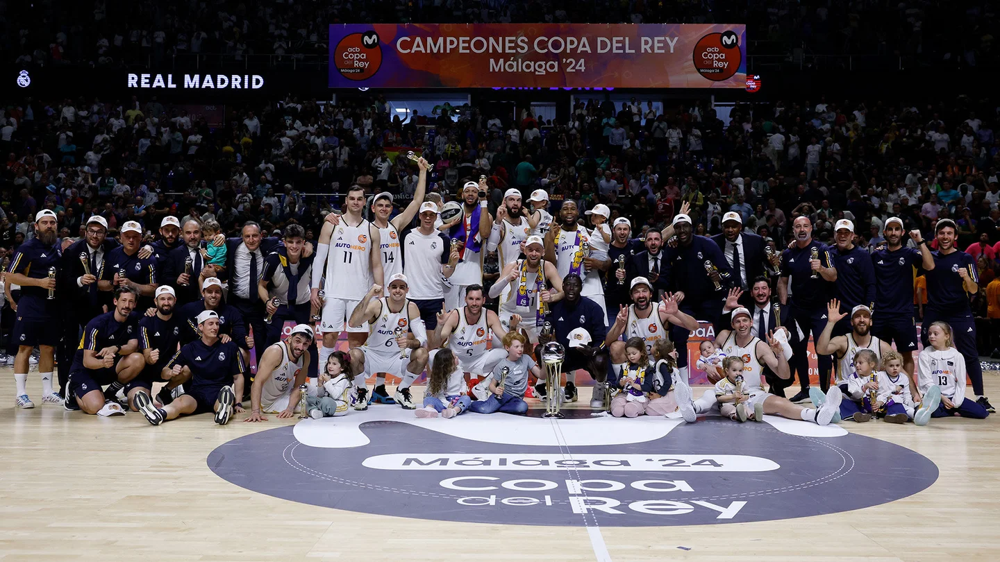

El Real Madrid de baloncesto campeón de la 29 Copa de S.M. el Rey
Nuestro equipo conquistó el título en la final contra el Barça disputada en Málaga (96-85).
El 18 de febrero de 2024, el Real Madrid se proclamó campeón de la Copa del Rey por vigesimonovena vez en su historia. Lo logró después de imponerse al Barça en una gran final celebrada en el Martín Carpena de Málaga, mismo escenario donde cuatro años antes conquistamos la 28ª. El rey de Copas agranda su palmarés en esta competición.
Este título será recordado por el triunfo de la unidad del equipo, de la fortaleza como grupo, de la solidaridad y la constancia. La Copa de Campazzo, que fue MVP, pero también la de Poirier, de Deck, de Musa y de todos y cada uno de los jugadores que forman la plantilla del Real Madrid. Y por supuesto, de Chus Mateo, que en una temporada y media sumaba ya cuatro títulos como entrenador.
El Real Madrid llegaba a la Copa del Rey líder en la Liga y en la Euroliga, firmando un primer tramo de temporada espectacular y con la Supercopa de España bajo el brazo. Pero había que refrendarlo. El primer obstáculo fue el UCAM Murcia en cuartos de final (84-79). En semifinales nos cruzamos con el Valencia Basket, otro rival exigente, pero el Real Madrid ganó con mucha claridad en un partido muy completo (95-76). El Clásico decidiría el título. Los de Chus Mateo derrotaron a los azulgranas en una final durísima en la que dieron todo y jugaron como un equipo con mayúsculas (96-85).
Campazzo, MVP del torneo El base argentino repitió galardón en el mismo escenario cuatro años después y tras promediar en esta Copa 14,7 puntos, 6,3 asistencias, 2,3 recuperaciones y 20,3 de valoración. Además, suponía su segundo MVP consecutivo de la temporada después del que consiguió en la Supercopa de España. “Estoy contento porque el trabajo colectivo fue increíble”, dijo tras la final.
El Real Madrid celebró el título en el Martín Carpena, donde Florentino Pérez felicitó a los campeones. Posteriormente, la fiesta se trasladó al vestuario y allí se produjo el habitual selfie de Llull. El presidente tuvo palabras de reconocimiento para el equipo dirigido por Chus Mateo: "Estoy orgullosísimo de este equipo de baloncesto que no para de ganar e ilusionar. Esta final ha sido muy bonita, muy competida y en la que han hecho un gran sacrificio”. Las celebraciones concluyeron al día siguiente con la visita al Ayuntamiento y a la Comunidad de Madrid para ofrecer la 29ª Copa del Rey a todos los madridistas.